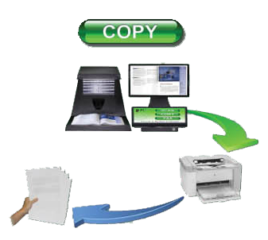

KIC Bookeye 4
A True Digital Age Multifunction System for Academic & Public Libraries
Book Scanning
Students at academic libraries want speed, and DLSG offers the fastest book scanners on the market. Patrons at public libraries need simplicity, and KIC provides three of the simplest possible user interfaces, one exclusively for scanning, one exclusively for copying and one exclusively for faxing. And KIC's best-of-breed power user interface is only a touch away.
Copier Replacement
While multifunction copiers are partly digital, they are big mechanical machines with big maintenance issues and tiny touch screens. As a copier replacement, KIC eliminates copier failure/service problems and provides very large touch screens and view screens that are larger still. Organizing (collating, clipping, rotating, etc.) pages on a huge touch screen is much easier than shuffling paper. The digital age has steadily driven down the demand in libraries for paper copies to levels that make it increasingly difficult to justify copiers. KIC self-service scanning systems reduce copier use further - to the point that attaching a small laser or ink jet printer is sufficient. KIC systems also handle much larger materials than copiers, and they scan books without damaging them. However, the most compelling benefit of KIC over copiers is KIC's speed, due mainly to its face-up scanning design, which is not only significantly faster, but far easier to use
Self-Serve Fax
KIC's huge touch screen and larger view screen make faxing extra easy. Users can compose, review, clip, crop and change brightness and contrast of the pages of a fax before sending. KIC's step-by-step process is designed for easy operation by even the most timid users. All you need is an internet connection, and DLSG will provide the rest at a cost so low that fax revenue can pay for the KIC system in a few years or less.
KIC Coins
Printing copies and faxing have per page costs that normally must be passed on to the user. KIC has a free, built-in method of charging users for copies and faxes. Simply print wallet-size "KIC Coins" on regular letter-sized paper in any denomination that you like, cut them out, and sell them to users at the circulation desk or wherever you collect fees for late book returns.
KIC Compatible with Copy Card & Cash Systems
All KIC systems are compatible with all standard copy card and coin-op devices. Since KIC transfers images to users' computers electronically, costly expendables are avoided, even for color! The library can opt to keep all revenue it collects.